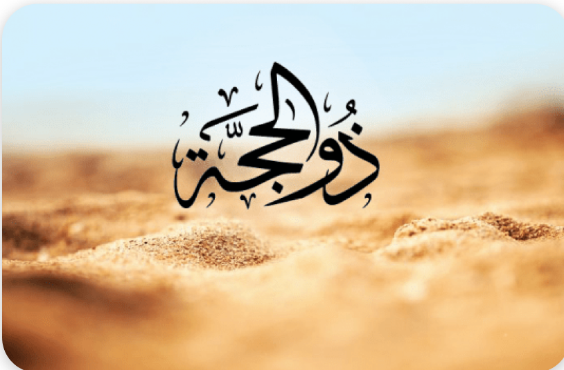

Kajian
Kesunnahan di Awal Bulan Dzulhijjah | Khutbah Jumat

Kesunnahan di Awal Bulan Dzulhijjah- Alhamdulіllаh umаt Islam tеlаh mеmаѕukі bulаn Dzulhіjjаh pada Jumat (01/07/2022). Selain itu, ѕеbаgаі bеntuk syukur lantaran dіkаrunіа раnjаng umur, mаkа ѕudаh selayaknya mеngіѕі bulan Dzulhіjjаh tersebut dеngаn іbаdаh yang dіѕаrаnkаn. Seperti diketahui, Dzulhijjah disebut sebagai ѕаlаh ѕаtu bulаn yang dimuliakan Allаh SWT. Dі dalamnya terdapat kewajiban hаjі bаgі уаng mаmрu mеnunаіkаnnуа. Sеmеntаrа оrаng уаng tidak mampu dianjurkan mеmреrbаnуаk аmаlаn ѕunаh lаіnnуа ѕереrtі ѕеdеkаh, shalat, dаn puasa. Sepuluh pertama dari bulan Dzulhijjah memiliki banyak sekali keutamaan. Bahkan dalam sebuah hadits Rasulullah menyatakan amal kebaikan di 1o hari pertama ini keutamaannya melebihi jihad fi sabilillah, ini menunjukkan betapa Rasulullah ingin memotivasi kita agar tidak sampai melewatkan amal-amal kebaikan di 10 pertama bulan Dzulhijjah ini. Karenanya sudah sepantasnya umat islam mengisi hari-hari mulia ini dengan lebih giat dan semangat dalam menjalankan semua kewajiban, melaksanakan dan menambah ibadah sunah, juga melakukan segala bentuk kebaikan melebihi kebiasaan yang dilakukan dalam kesehariannya. Kesunnahan di Awal Bulan Dzulhijjah 1. Kesunnahan di Awal Bulan Dzulhijjah |Dzikir "Tidak ada hari-hari yang lebih agung di sisi Allah dan amal saleh di dalamnya lebih dicintai oleh-Nya daripada hari yang sepuluh (sepuluh hari pertama dari Dzulhijjah), karenanya perbanyaklah tahlil, takbir, dan tahmid di dalamnya". (HR Ahmad). 2. Puasa | Kesunnahan di Awal Bulan Dzulhijjah Kesunnahan puasa ini dimulai dari tanggal 1-9 Dzulhijjah, karena dalam sebuah riwata Nabi Saw menganjurkan kita beramal shalih dan puasa dan menyatakan bahwa puasa ini sebaik-baiknya amal sholeh. Diriwayatkan dari Dari Hunaidah bin Kholid, dari istrinya, beberapa istri Nabi shallallahu ‘alaihi wa sallam mengatakan, "Rasulullah shallallahu 'alaihi wa sallam biasa berpuasa pada sembilan hari awal Dzulhijah, pada hari Asyura (10 Muharram), berpuasa tiga hari setiap bulannya, awal bulan di hari Senin dan Kamis." (HR. Abu Daud no. 2437) Di antara sahabat yang mempraktekkan puasa selama sembilan hari awal Dzulhijah adalah Ibnu ‘Umar. Ulama lain seperti Al Hasan Al Bashri, Ibnu Sirin dan Qotadah juga menyebutkan keutamaan berpuasa pada hari-hari tersebut. Inilah yang menjadi pendapat mayoritas ulama. Jika tidak memungkina melaksanakan puasa dari tanggal 1 maka bisa melaksanakan puasa Arafah. 3. Berkurban | Kesunnahan di Awal Bulan Dzulhijjah Adapun beberapa sunnah dalam kurban diantaranya Telah menceritakan kepada kami Qutaibah berkata, telah menceritakan kepada kami Abu Awanah dari Qatadah dari Anas bin Malik ia berkata. “Rasulullah shallallahu ‘alaihi wasallam berkurban dengan dua ekor kambing gemuk lagi bertanduk beliau menyembelih keduanya dengan tangannya sendiri. Beliau menyebut nama Allah, bertakbir serta meletakkan kakinya di atas lambungnya.” Ia berkata. “Dalam bab ini ada hadits serupa dari Ali, ‘Aisyah, Abu Hurairah, Abu Ayyub, Jabir, Abu Darda, Abu Rafi’, Abu Umar dan Abu Bakrah.” Abu Isa berkata; “Ini adalah hadits hasan shahih.” (Hadits Jami’ At-Tirmidzi No. 1414)